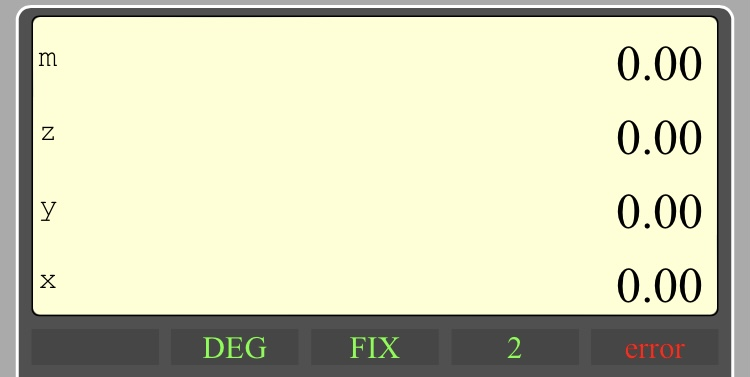

The Reverse Polish Notation
Stk 21 is an "on line" calculator which does mathematical calculations using the Reverse Polish Notation (RPN), which means that it uses a "computation stack" (registers referenced as x-register, y-register, z-register) to perform computational operations.This specific calculation methodology doesn't require the usual, but complex, bracket groups to define the calculation hierarchy. Calculations are therefore carried out quickly and smoothly. Althought the RPN has been invented by the polish mathematician Jan Łukasiewicz in 1924, it has been widely implemented in the Hewlett Packard pocket calculators' starting in the 1970's.
More informations on the old HP calculators are available here : https://www.hpmuseum.org.
When using RPN you first enter the numbers used for the calculation in the stack, then you perform the operation. For example if you want to add 78 to 56, you have to :
- key in 5 and 6. Press the ENTER key to finalize the entry. The number in x-register is now 56
- key in 7 and 8. Press the ENTER key again. This will move up automatically the 56 value in the y-register, and the x-register now displays 78
- press the + key. This will add the number in y-register to the number in x-register. The x-register will therefore display the result ie. 134
The display area
This area includes :- the stack area which includes the computation registers named x-register, y-register, z-register and the memory register named mem-register

- The modes area shows the display of the selected modes, and the information display


- a yellow circle that shows that the yellow key was pressed, therefore the bottom function of keys activated.
- the angle mode which can be DEG for degree or RAD for radian
- the display mode which can be FIX for normal display or SCI for scientific display
- the number of displayed decimals, from 0 to 8
- the information display which shows warning messages : error when a calculation error occurs (for example divided by 0), ➔SCI when the number is too large to be displayed in the FIX mode, and the SCI mode is automaticaly activated
The keyboard area

The keys are organized in 4 main categories:
- the yellow key which is used to select the bottom function of some keys
- the grey keys which are related to stack and memory manipulations, display modes...
- the blue keys which are used to perform mathematical operations
- the white keys, including the figures from 0 to 9, the decimal point, the minus sign... that is to says the ones used to key in a new number
The yellow key
0000 is used to select functions, written in yellow color and located at the bottom of some keys. For example to select the CHS function you have to press first the 0000 key than the oneThe grey keys
DEG for degree. All trigonometric calculations will be done using the degree unitRAD for radian. All trigonometric calculations will be done using the radian unit
FIX for fixed mode. Set the fixed mode where numbers are represented directly, without exponent.
Notice : some numbers, big ones, or with lot of displayed decimals, could be to large to be displayed (more than 16 characters). When this happen the calculator will automatically move to the scientific mode. A warning message will be displayed in the information display
SCI for scientific mode. Number are displayed with a mantissa and an exponent. Example: 123.45 is displayed as 1.23e+2
D+ for decimal +. Increase the number of displayed decimals by one.
Notice that the number of decimals is limited to 8
D- for decimal -. Decrease the number of displayed decimals by one.
Notice that the minimum number of decimals is 0
CSTK for clear stack. All stack registers and the memory register are set to 0
DUP for duplicate. The number in y-register is moved to the z-register, and the number in y-register is set to the number in x-register
CHS for change sign. The number x, in x-register is replaced by -x
SWAP for swap. The number in x-register and the number in y-register are swapped
DROP for dropping. The stack is moved down: the number in x-register is set to the number in y-register. Then the number in y-register is set to the number in z-register. Finally the number in z-register is set to 0.
Notice that the original number in the x-register is lost
ENTER finalize the entering process of a new number in the x-register register.
STO for store. The current number in the x-register is stored in the memory register.
Notice : storing a value in the memory doesn't erase it from the x-register
RCL for recall. The stack is moved up and the current number in the mem-register is stored in the x-register.
Notice: recalling a value from memory doesn't erase it from the memory register
The blue keys
LN for neper logarithm. The number in x-register (x) is replaced by neper logarithm(x).Notice: if the number in x-register (x) is = 0 or < 0, a warning is set in the information display and the operation is not done
e^x for exponential. Raises e (2.718 ...) to power of value in x-register. The number in y-register is replaced by the number in z-register. The number in z-register is set to 0.
Notice: if the results exceed the maximum number accepted by the calculator, which is 9.99999999 e+99, a warning is set in the information display and the operation is not done
LOG for logarithm to base 10. The number in x-register (x) is replaced by logarithm(x) in base 10.
Notice: if the number in x-register(x) = 0 < 0, a warning is set in the information display and the operation is not done.
x^y for power. Raises the number in x-register (x) to power of value in y-register (y). The number in x-register (x) is replaced by (x^y). The number in y-register is replaced by the number in z-register. The number in z-register is set to 0.
Notice: if the results exceed the maximum number accepted by the calculator, which is 9.99999999 e+99, a warning is set in the information display and the operation is not done
SIN for sinus. The number in the x-register (x) is replaced by sinus(x). If the DEG mode is set, the number in x-register will be considered in degrees. If the RAD mode is set, the number in x-register will be considered in radians
ASIN for arcsinus. The number in x-register (x) is replaced by arcsinus(x). The result value will be in degrees if the DEG mode is set, in radians if the RAD mode is set.
Notice: if number in x-register (x) > 1 or < -1 a warning is set in the information display and the operation is not done.
COS for cosinus. The number in the x-register (x) is replaced by cosinus(x). If the DEG mode is set, the number in x-register will be considered in degrees. If the RAD mode is set, the number in x-register will be considered in radians
ACOS for arccos. The number in x-register (x) is replaced by arccosinus(x). The result value will be in degrees if the DEG mode is set, in radians if the RAD mode is set.
Notice: if number in x-register (x) > 1 or < -1 a warning is set in the information display and the operation is not done.
TAN for tangent. The number in x-register (x) is replaced by tangent(x). If the DEG mode is set, the number in x-register will be considered in degrees. If the RAD mode is set, the number in x-register will be considered in radians
Notice: if number in x-register (x) is equal to +90 degrees or -90 degrees (+pi/2 or -pi/2 in radians) a warning is set in the information display and the operation is not done
ATAN for arctangent. The number in the x-register (x) is replaced by arcsinus(x). The result value will be in degrees if the DEG mode is set, in radians if the RAD mode is set.
SQRT for square root. The number in x-register (x) is replaced by square root(x).
Notice: if the number in x-register < 0, a warning is set in the information display and the operation is not done
x^2 for square. The number in x-register (x) is replaced by x squared.
Notice: if the results exceed the maximum number accepted by the calculator, which is 9.99999999 e+99, a warning is set in the information display and the operation is not done
+ for plus. The number in the x-register (x) is replaced by (x+y).The number in y-register (y) is replaced by the number in z-register. The number in z-register is set to 0
- for minus. The number in the x-register (x) is replaced by (y-x). The number in y-register (y) is replaced by the number in z-register. The number in z-register is set to 0.
x for multiplication. The number in x-register (x) is replaced by number in (x * y). The number in y-register (y) is replaced by the number in z-register. The number in z-register is set to 0.
Notice: if the results exceed the maximum number accepted by the calculator, which is 9.99999999 e+99, a warning is set in the information display and the operation is not done
/ for division. The number in x-register (x) is replaced by (y/x). The number in the y-register (y) is replaced by the number in thr z-register. The number in z-register is set to 0.
Notice: if the number in x-register is equal to 0, a warning is set in the information display and the operation is not done
The white keys
0 to 9 numbers. decimal point
- minus sign, used to enter negative numbers or a negative exponent. Example : -123 or 456E-3. It should not be mixed with the mathematical operation minus (a blue key), which substact one number from an other one.
E exponent sign
PI enter the mathematical value Pi (3.14...) into the x-register
C for clear. While keying a new number, remove the last entered sign from the x-register
Stk 21 by creations56, v. 04/24